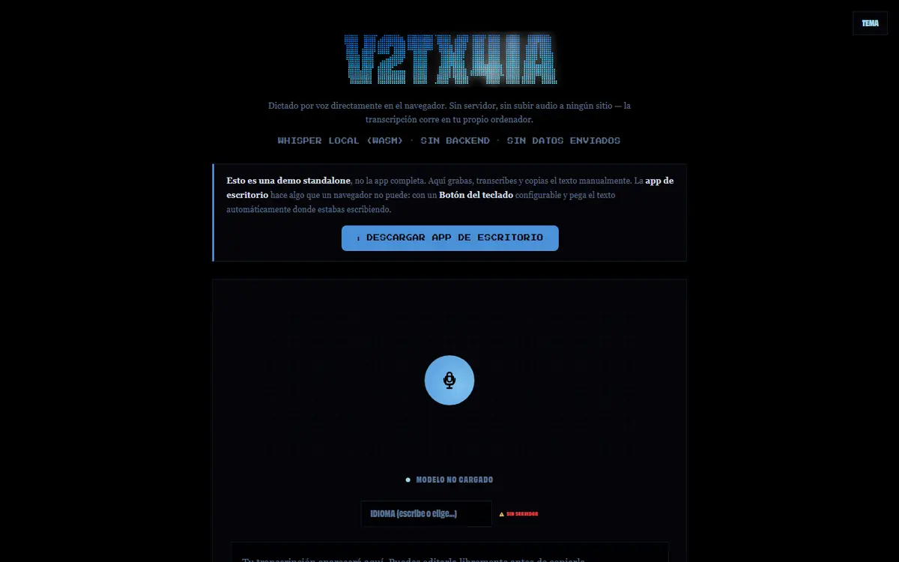
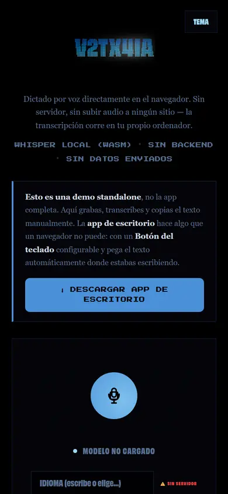

Para quién
- Quien escribe mucho (prompts para la IA, notas, correos) y prefiere hacerlo hablando
- Quien no quiere que su voz pase por un servidor ajeno
Dictado por voz que transcribe en tu propio ordenador. La versión web corre en el navegador con Whisper compilado a WebAssembly: el audio nunca sale de tu equipo.
La demo web funciona en el navegador. La primera vez descarga el modelo, así que tarda un poco más.
Los dictados habituales mandan tu voz a un servidor para transcribirla. Para notas privadas, prompts para la IA o textos de trabajo, no quería que mi voz saliera de mi ordenador.
Además, para escribir prompts largos hablar es mucho más rápido que teclear, y quería poder hacerlo en cualquier aplicación, no solo en una web.
Quería algo que funcionara sin conexión, sin cuentas y sin coste por minuto.
Pulsas el botón (o la tecla F8 en la app de escritorio) y hablas con normalidad.
La primera vez descarga un modelo pequeño de Whisper (tiny o base). Por eso la primera transcripción tarda un poco más.
Whisper convierte la voz en texto en tu propio equipo: en el navegador con WebAssembly y en la app de escritorio con faster-whisper.
Lo copias, lo guardas en el historial de la sesión o, en la app de escritorio, se escribe directamente en la aplicación que tengas abierta.


La transcripción no necesita backend: todo el trabajo lo hace tu navegador.
Tecla global F8, indicador flotante de grabación, historial y bandeja del sistema. Se descarga desde la web.
En el navegador, Whisper tiny o base. En escritorio, faster-whisper small en el procesador, sin necesitar tarjeta gráfica.
Sin cuentas. El historial se guarda solo en tu navegador y se borra si limpias los datos del sitio.
De la idea al uso diario:
Demo web publicada y app de escritorio descargable desde la propia web.
Instalador más sencillo para la app de escritorio y elegir el modelo según la potencia del equipo.